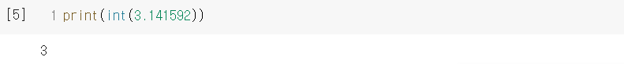
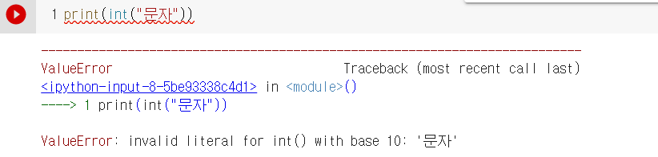
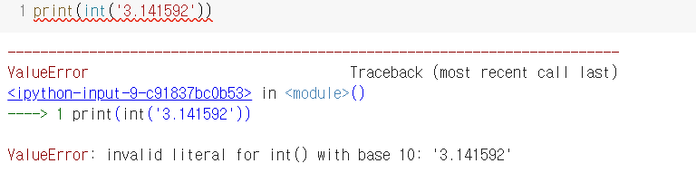
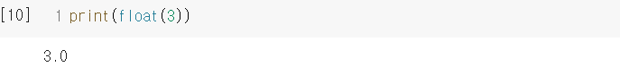
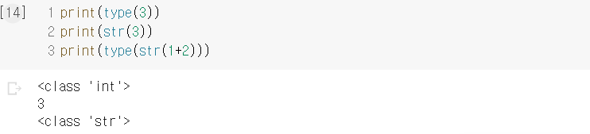

int(x)는 변수 x의 자료형을 정수형으로 변환한다는 의미입니다.
하지만 모든 자료형을 변환할 수 있는 건 아닙니다.
오류가 나는 이유를 쉽게 설명해보자면
"문자"를 int로 바꾸기 위해서는 큰따옴표를 없애고 문자라는 글자를 숫자로 바꾸어야 하니까 총 2번을 변환한 셈입니다.
즉 한 번만 거쳐서 변환할 수 있습니다.
이 경우도 큰따옴표를 없애고 소수점을 없애야 하므로 총 2번을 바꾼 셈입니다.
따라서 오류가 발생했습니다.
float(x)는 변수 x의 자료형을 실수형으로 변환한다는 의미입니다.
앞서 설명했던 것과 마찬가지로 모든 자료형을 변환할 수 있는 건 아닙니다.
str(x)는 변수 x의 자료형을 문자열로 변환한다는 의미입니다.
이것도 모든 자료형을 변환할 수 있는 건 아닙니다.